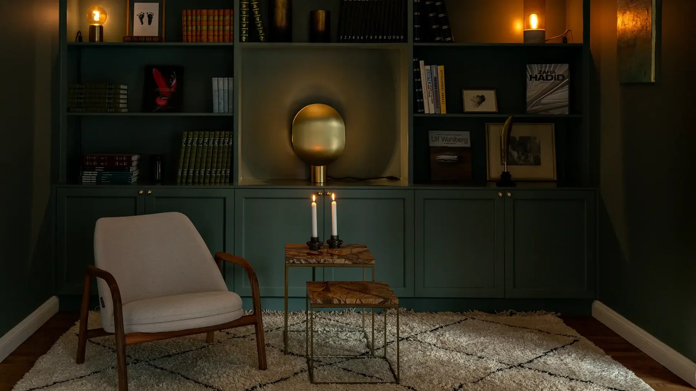
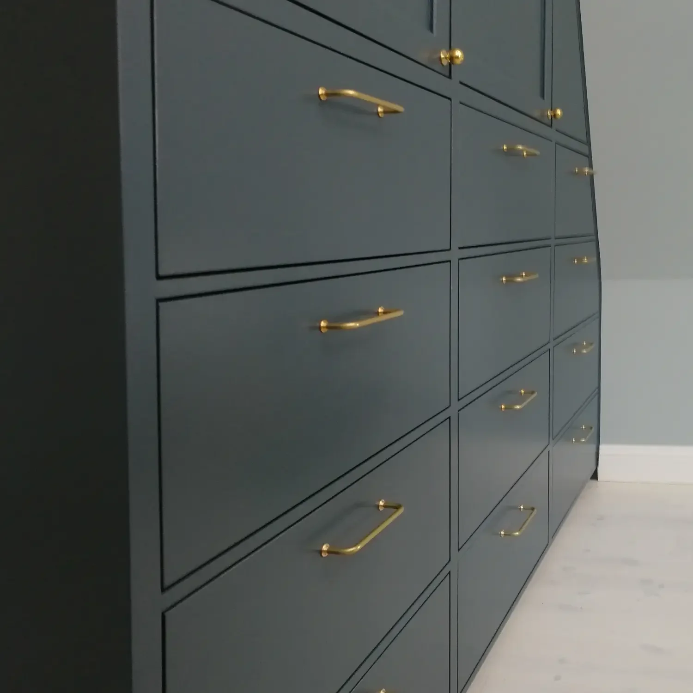

Böcker. Föremål. Personlighet.
Platsbyggda bokhyllor

Platsbyggt finsnickeri i Stockholm
Formgivna för ditt rum. Tillverkade i vårt snickeri. Från första skiss till den sista detaljen på plats.
En bokhylla som möter taklisten. En garderob under snedtaket. En plats för allt det som är ditt.
Vi är ett personligt snickeri som gör platsbyggda möbler, förvaring och specialinredningar. Du kommer med dina önskemål. Vi bidrar med form, materialkännedom och hantverk.
Lär känna snickerietEtt bibliotek, en favoritvägg eller plats för allt du vill ha framme.
Utforska bokhyllorFörvaring som följer rummets mått och det du behöver få plats med.
Utforska garderoberHallinredning, skåp och genomtänkta lösningar för hemmets olika rum.
Utforska förvaringMöbler och inredningar som tar form utifrån en särskild idé.
Utforska specialinredning
Materialet gör skillnaden
Träets struktur. En kulör som hör ihop med rummet. Hur en låda känns i handen.
Vi arbetar med massivt trä, fanérade skivor och HDF. Material och ytbehandling väljs för det du vill skapa, med handmålning eller sprutlackering i valfri NCS-kulör.
Om material och kulörerVi är med från första mötet till den sista justeringen på plats.
Du berättar om rummet, dina önskemål och det som ska få plats. Vi tittar på möjligheterna tillsammans.
Skisser, material, kulörer och pris. Designritningar och offert är kostnadsfria.
Snickeriet sker i vår verkstad i Skogås. Sedan levererar, monterar och justerar vi hemma hos dig.
”Det var väldigt lätt och trevligt att samarbeta kring både planering och genomförande av projektet och vi är väldigt nöjda med resultatet!”
Frida Andersson · Google
Från ett helt rum till en noga genomarbetad detalj. Ett urval från vårt galleri.

Detalj från hallinredning

Platsbyggd förvaring

Trälådor till årsglögg 2022
Några av dem vi har arbetat med




Efter ett hembesök tar vi fram ett kostnadsfritt förslag som innehåller designritningar och offert. Du får en tydlig bild av både utformning och pris innan du bestämmer dig.
Vi arbetar främst med massivt trä, fanérade skivor och kvalitativ HDF. Ytorna handmålas eller sprutlackeras, och du kan välja kulör enligt NCS.
Nej. Ingenting betalas innan projektet är färdigställt och du är nöjd med resultatet.
Möblerna tillverkas i vårt snickeri i Skogås. Sedan transporterar vi dem till dig för montering och justering. På så sätt sker själva tillverkningen, med slipdamm och arbetsbuller, i verkstaden.
Ja. Vi gör platsbyggda möbler och specialinredningar för både hem och kontor i hela Storstockholm, liksom fristående möbler och särskilda finsnickeriprojekt.